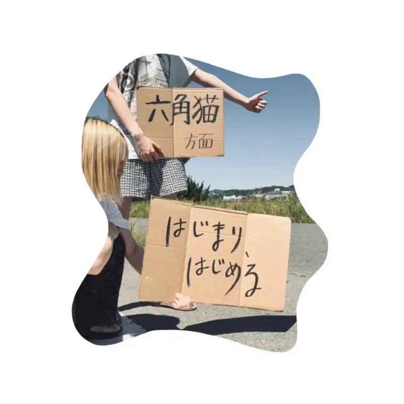
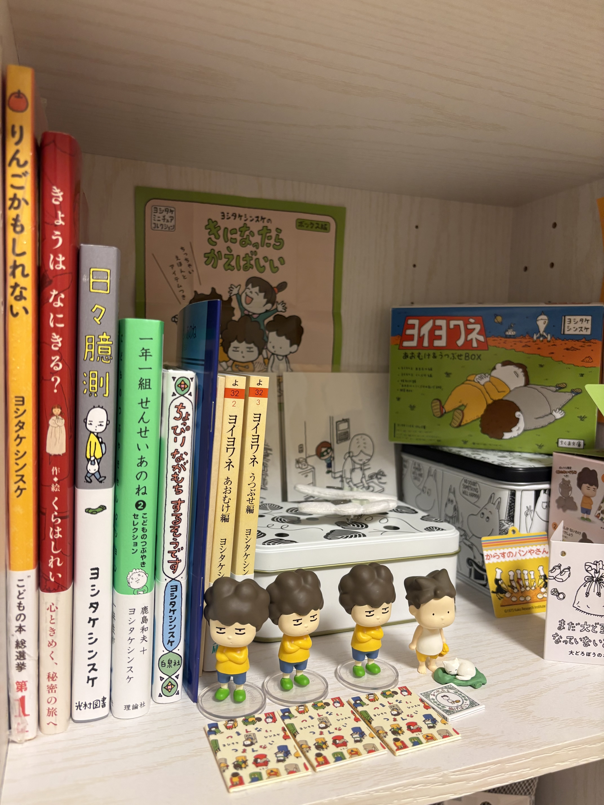
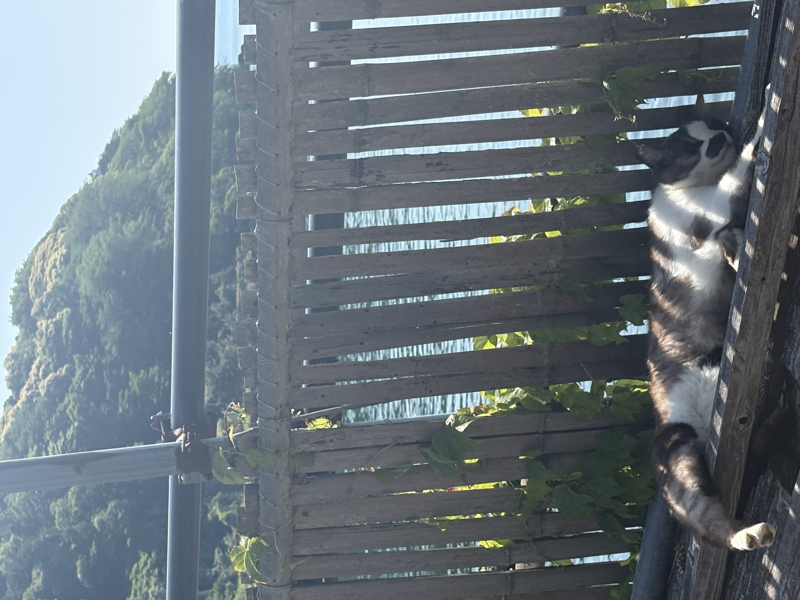

interview
いつの(六角猫)、「芯が強いようで弱い。そんな自分自身に言い聞かせるよう、現実に立ち向かえるよう」

自己紹介をお願いします。
2026.06.01に活動開始した六角猫のGt.vo. いつのです。くるくるパーマ。作詞作曲もしてます。どこにでもいる野良のにんげんです。
直近のリリースについて教えてください。
1st single "はじまり、はじめる"をリリースしました。芯が強いようで弱い。そんな自分自身に言い聞かせるよう、現実に立ち向かえるよう作った楽曲です。私たちの"はじまり"に相応しい1曲になっています。MVも公開しているので、ぜひご覧ください。

▷ Listen一日、何も気にせず自由に過ごせるとしたら、どのような一日にしますか？
朝は11:00に起きます。12:00を越えなければ朝なので早起きです。ベッドに名残惜しさを感じながら起き上がり、アルバイト先のパン屋さんで貰ったパンを美味しくいただきます。朝はパン派ですね。そして朝昼兼用ご飯にします。
その後、本屋さんへ行きます。私は絵本が大好きなので真っ先に絵本ゾーンへ向かいますね。一通り見終えたら欲しい本を好きなだけ手に取り、その流れで絵本の雑貨を見にいきます。絵本も雑貨も普段は買いすぎ防止のために少ししか買わないようにしているので、1日だけ自分を許して、たくさん買っちゃいたいですね。

家に帰って買ってきた雑貨を部屋に飾って、絵本にカバーをつけて読んで本棚になおして。私の趣味、特技がナンプレなので、気が済むまでナンプレをして1日を終えます。実際は眠気に負けて丸一日ゴロゴロしてしまいます。いつか眠気に勝って実現させたいですね。
今後の展望があれば教えてください。
ライブや楽曲制作など、これからもっと活動していきます。まだ未熟なバンドですが、私たちと同じような社会での生きづらさを感じる強くて弱い方々と少しでも前を向けるよう、音楽を作っていきたいと思います。これからの六角猫に乞うご期待。

いつの（六角猫）